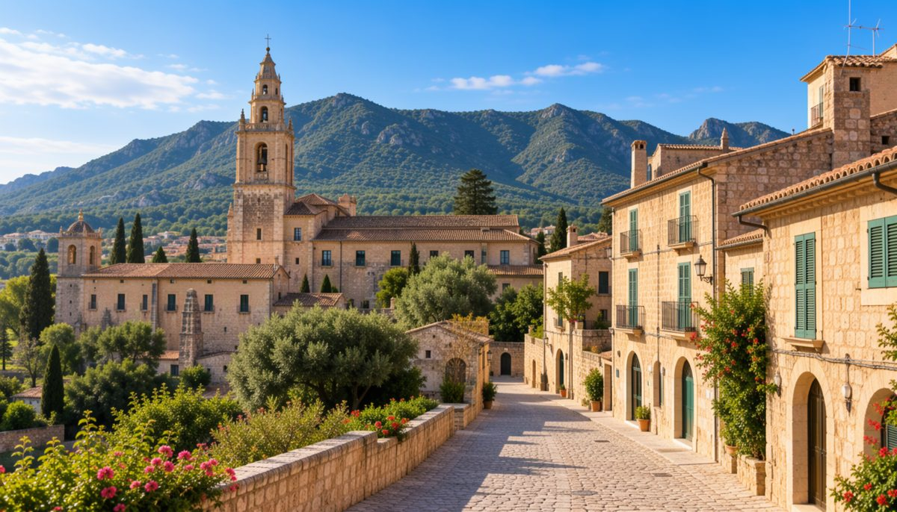
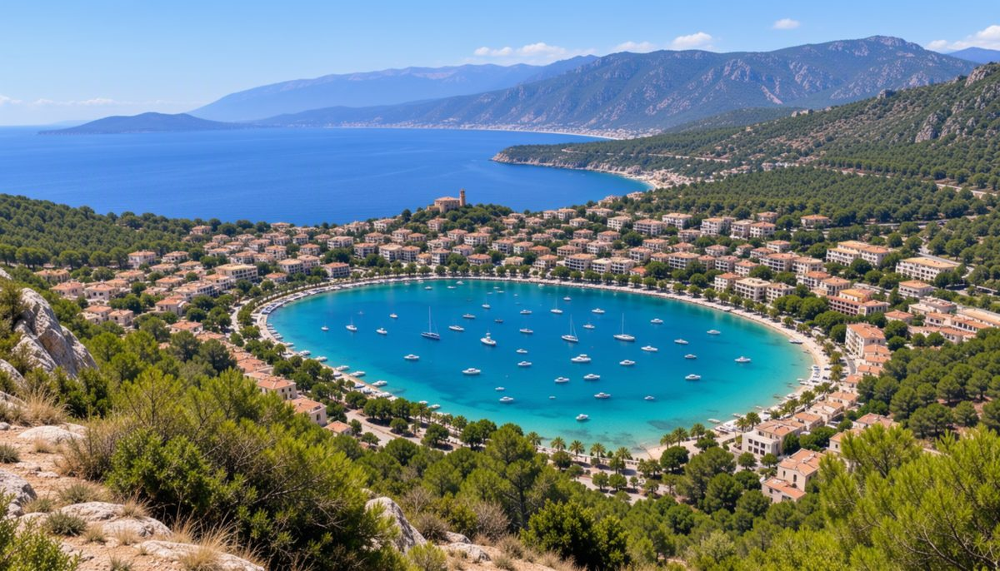

Bicis Tramuntana
Lloga la bici per a qualsevol d'aquestes rutes: 15 € el dia
Inici
Contacte
Galeria
Rutes en bici per Mallorca
Sa Calobra
· 38 km
Cap de Formentor
· 42 km

Valldemossa
· 30 km

Port de Sóller
· 25 km
Els ametllers en flor
· 35 km
Es Trenc
· 28 km
Santuari de Lluc
· 45 km
Pont romà de Pollença
· 20 km
Ses Salines
· 32 km